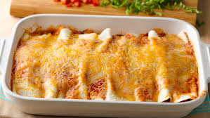
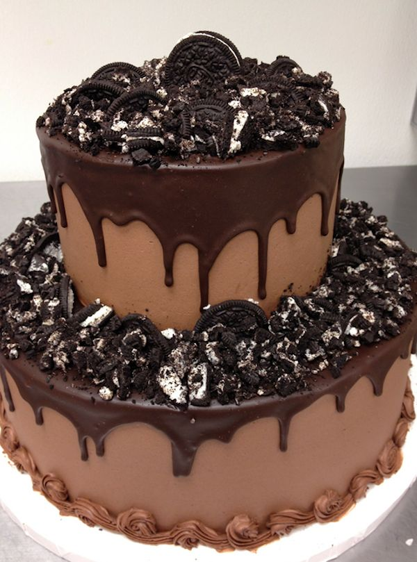

Enchiladas

Ingrediants | Directions |
| 1 (15 ounce) can tomato sauce | Pour in pan |
| 1/2 cup of water | Preheat Oven to 350 degrees |
| 1 tablespoon chili powder | Fold over filling |
| 1/3 cup chopped green bell pepper | Place 8 enchiladas in each pan with seam side down |
| 1 clove garlic, minced | Top with remaining enchilada suace and cheese |
| 1 (12 ounce) jar taco sauce | Bake for 15 minutes in the preheated 350 degree oven until cheese melts |
| 3/4 cup shredded Cheddar cheese | Garnish with cilantro, scallion, sour cream and chopped tomatoes before serving. |
Tacos

Ingrediants | Directions |
| 3/4 cup peanut oil | 1. Cook beef in 10 inch skillet over medium |
| 12 (6 inch) yellow corn tortillas | 2. heat 8 to 10 minutes, stirring occasionally, until brown; drain |
| Kosher, for seasoning, plus 1 teaspoon for beef | 3. Stir salsa into beef. Heat to boiling, stirring constantly; reduce heat to medium-low |
| 1 medium onion, chopped | 4. Heat Taco shells as directed on packet. Serve taco shells with beef mixture, lettuce, tomato and cheese |
| 16 ounces ground sirloin |
| 2 cloves garlic, minced |
| 1 recipe Taco Potion #19, recipe follows |
| 2/3 cup low-sodium beef broth |
Cake

Ingrediants |
Directions |
| 1.5 cups of sifted cake flour | Heat the oven to 350 degrees |
| 1.5 tsp. baking powder | Sift together the flour, baking powder, and salt |
| 1/4 tsp. salt | Prepare the pans: Rub the bottoms and sides of the cake pans with a little butter, shortening, or baking spray. |
| 1/2 cup of unsalted butter | Beat the butter and sugar until fluffy and light. |
| 1 cup of sugar | Add the eggs one at a time. |
| 2 large eggs |
| 1/2 tsp. vannila extract |
| 1/2 cups of whole milk |